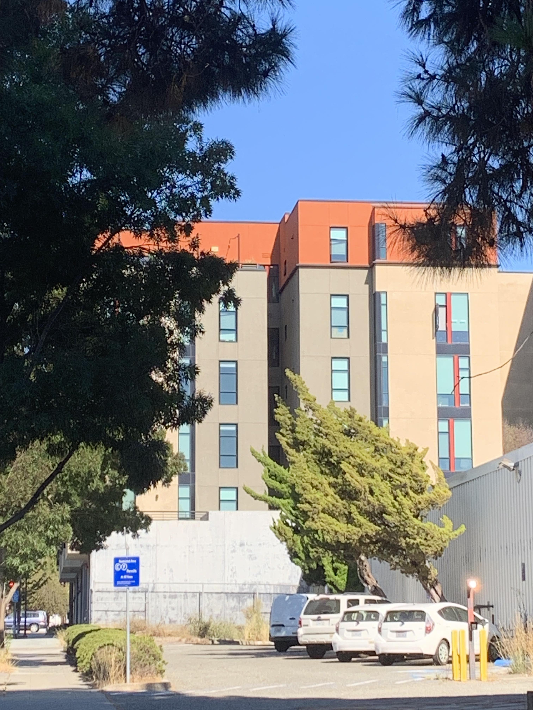
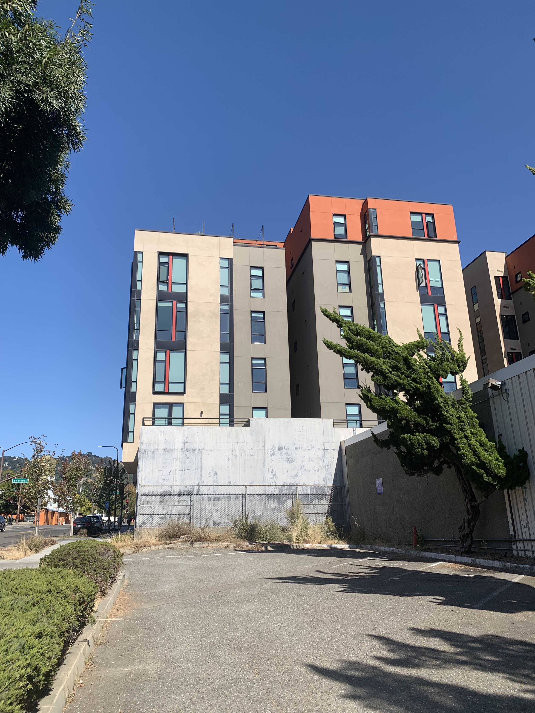

Close selfie: face appears narrow
with larger central features (e.g. nose),
but small peripheral features (e.g. ears).
Far selfie: face appears flat
and non-distorted.
When the face is close to the camera, the ratio of the distance from
the camera to close features (e.g. nose) : the distance from the camera to
far features (e.g. ears) is very high and disproportionate, causing distortion (left).
In contrast, when the camera is placed further, because the distances between the
face features (e.g. how much the nose sticks out from the face plane) is much lower
than the distance of the camera to the face plane, that distortion is no longer
present.
Part 2

Zoomed-in picture of building

Closer picture of building
Similar to Part 1, when far away and zoomed in, the distance from the closest
point on the building (bottom floor) to the furthest point in the building (top
floor) is very small in comparison to how far the camera is from the building, causing
the building to appear flat. However, once closer, the distance between the camera
to the top and bottom floors is now significantly different, which causes the building
to appear to lean, as the top floor appears smaller and further from the lens.
Part 3
Dolly zoom shot of Mr. Bunny
in front of rooftop view; background appears
to zoom in when camera moves backwards